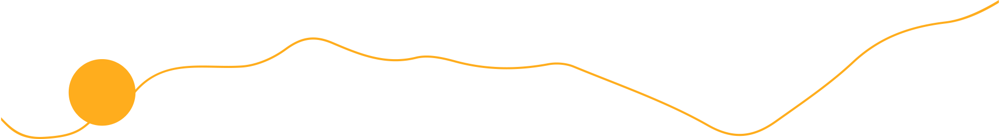
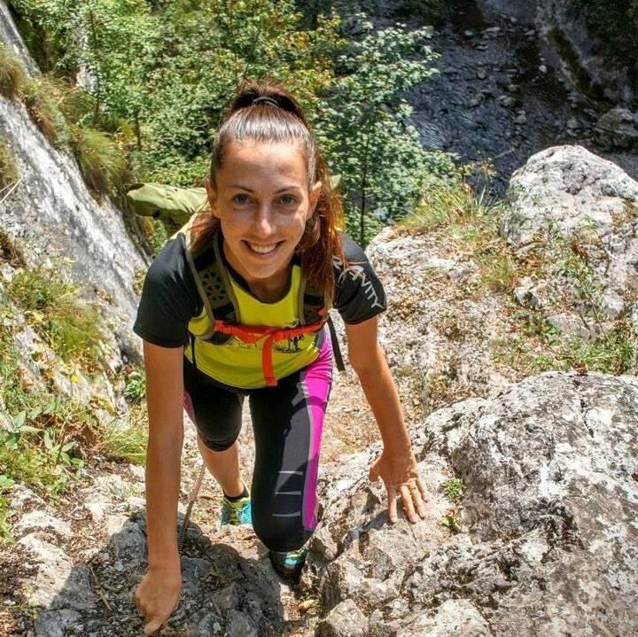
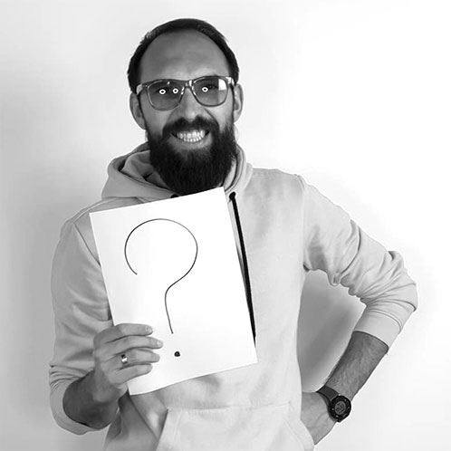
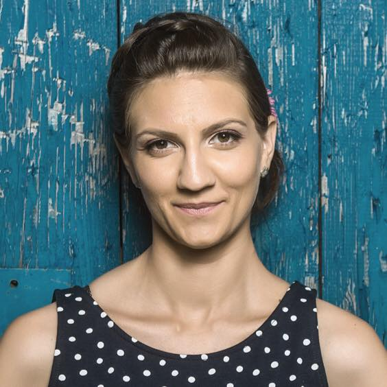
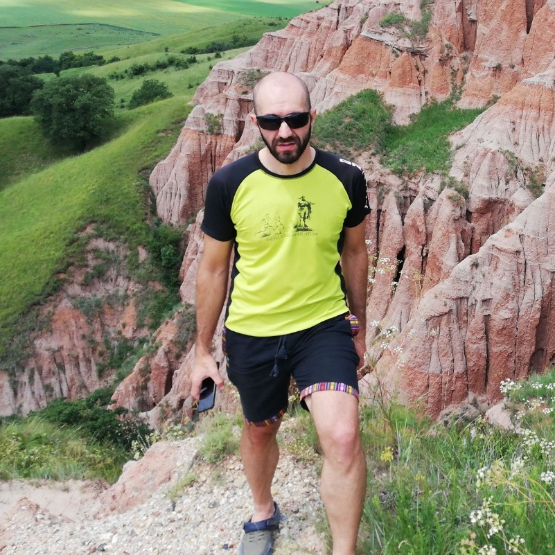
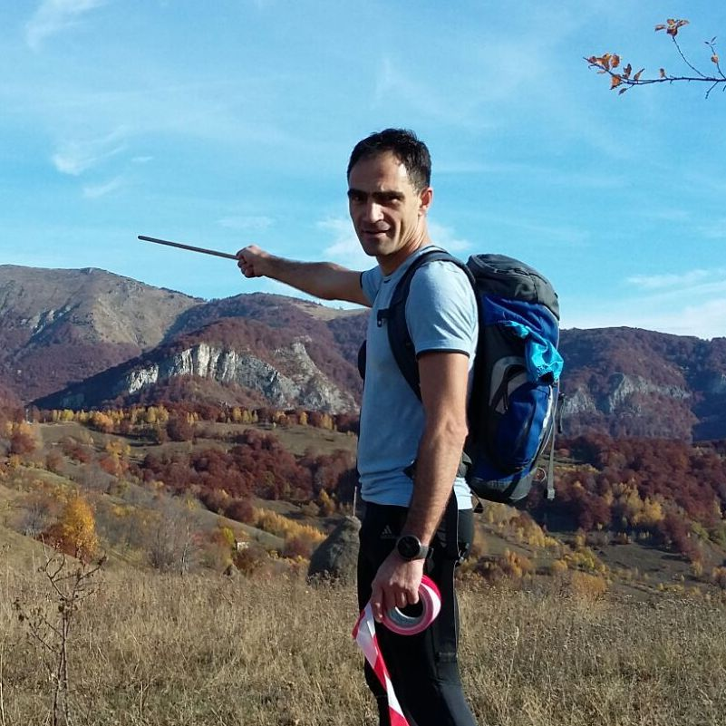

HERCULES MARATON
- Donut edition -
16 Octombrie 2022
Ce este Hercules Maraton
Hercules Maraton este unul dintre primele concursuri de alergare montană din țară
și unul dintre cele mai îndrăgite.
An de an, sute de participanți iau startul în probele de
Semimaraton
șiMaraton
, înconjurați de peisajele din Munții Mehedinți, care îți taie respirația și te acompaniază pe potecile montane pictate în culori de toamnă.Hercules Maraton
a devenit un simbol al mișcării în natură atât pentru locuitorii din zonă, cât și pentru alergătorii din țară și chiar și de peste hotare.
Scopul nostru este să promovăm mișcarea în natură, respectul pentru cadrul natural, să promovăm una dintre cele mai diverse zone montane din țară, să contribuim activ la dezvoltarea zonei și să atragem oameni iubitori de munte în Valea Cernei, care este pentru noi ca o a doua casă.
De ce DONUT EDITION?
Participanții știu deja despre obiceiul devenit o adevărată tradiție. În fiecare an, tanti Maria aprovizionează unul dintre punctele de alimentare cu gogoși proaspeți și gustoși. Și pentru că am văzut cât de apreciată a fost această gustare de pe traseu, anul acesta am pregătim o ediție cu gogoși peste tot. E pe bune, nu vă vindem gogoși!
Detalii despre concurs

Startul
va avea loc Sâmbătă, 16 Octombrie, de la ora 9:00 de pe Podul dinspre Vânturătoarea.
Traseul de Semimaraton urmează marcajul galben și are o lungime de 21 km și o diferență de nivel de 1100 metri.
Traseul de Maraton este marcat cu cerc roșu și are o lungime de 43 km, cu diferență de nivel de 2300 metri.
Înscrierile sunt deschise până în data de 30 Septembrie, inclusiv, iar înscrierile la fața locului nu vor fi posibile.
Categoriile de vârstă premiate în concurs vor fi următoarele:
- 18-29 Masculin / Feminin / General
- 30-39 Masculin / Feminin / General
- 40-49 Masculin / Feminin / General
- 50+ Masculin / Feminin / General
Clasamentul general va fi împărțit în următoarele categorii:
- Semimaraton Masculin
- Semimaraton Feminin
- Maraton Masculin
- Maraton Feminin
| Cursa | Nume | Prenume | Oraș | Echipă | Status |
|---|
Descrierea traseelor

SEMIMARATON
Se desfășoară prin zonele pitorești ale cătunelor Ineleț, Cracul Mare, Prisăcina și Dobraia, cu panorame spectaculoase spre Valea Cernei, Munții Mehedinți și abrupturile stâncoase ale Cheilor Prisăcinei.
Traseul se desfășoară pe drumuri forestiere, drumuri de căruță de-ale localnicilor și poteci montane. O singură porțiune de 2 km are o urcare mai abruptă, traseul fiind alergabil în proporție de 90%, iar pentru cei cu adevărat hotărâți, chiar de 100%.
Puncte de control (PC) și revitalizare (R):
Timpi limită de parcurgere:
Descarcă Track GPS Semimaraton
Traseul se desfășoară pe drumuri forestiere, drumuri de căruță de-ale localnicilor și poteci montane. O singură porțiune de 2 km are o urcare mai abruptă, traseul fiind alergabil în proporție de 90%, iar pentru cei cu adevărat hotărâți, chiar de 100%.
Puncte de control (PC) și revitalizare (R):
- 1 Podul Ineleț (R)
- 2 Cătun Ineleț (PC), (R)
- 3 Sat Prisăcina (R)
- 4 Biserica Dobraia (PC), (R)
- 5 Finish (PC), (R)
Timpi limită de parcurgere:
- Cătun Ineleț - 3 ore
- Finish - 5 ore
Descarcă Track GPS Semimaraton
MARATON
Se desfășoară în Muntii Cernei pe un traseu ce face ocolul Arjanei (1512m), cel mai pitoresc vârf din munții Cernei.
Este un traseu montan pe poteci turistice, ciobănești, drumuri forestiere și drumuri de căruță de-ale localnicilor. Startul și sosirea sunt în Valea Cernei, traseul traversează de 2 ori creasta munților Cernei, ajunge dincolo de creastă în satul Bogâltin, străbate împrejurimile pitorești ale cătunelor de munte: Dobraia, Poiana Lungă, Ineleț, Cracul Mare, Prisăcina. Traseul oferă panorame deosebite asupra Văii Cernei, a abrupturilor calcaroase ale munților Mehedinți și impresionantei despicături a Cheilor Prisăcinei.
Puncte de control (PC) și revitalizare (R):
Timpi limită de parcurgere:
Descarcă Track GPS Maraton
Este un traseu montan pe poteci turistice, ciobănești, drumuri forestiere și drumuri de căruță de-ale localnicilor. Startul și sosirea sunt în Valea Cernei, traseul traversează de 2 ori creasta munților Cernei, ajunge dincolo de creastă în satul Bogâltin, străbate împrejurimile pitorești ale cătunelor de munte: Dobraia, Poiana Lungă, Ineleț, Cracul Mare, Prisăcina. Traseul oferă panorame deosebite asupra Văii Cernei, a abrupturilor calcaroase ale munților Mehedinți și impresionantei despicături a Cheilor Prisăcinei.
Puncte de control (PC) și revitalizare (R):
- 1 Biserica Dobraia (PC), (R)
- 2 Izvor Poiana Lungă (R)
- 3 Bogâltin (PC), (R)
- 4 Fântâna Babii (R)
- 5 Șaua Ciumerna (PC)
- 6 Cătun Ineleț (PC), (R)
- 7 Sat Prisacina (PR)
- 8 Biserica Dobraia (PC+PR)
- 9 Finish (PC), (R)
Timpi limită de parcurgere:
- Sat Bogâltin - 4 ore
- Cătunul Ineleț - 6.5 ore
- Finish - 10 ore
Descarcă Track GPS Maraton
Organizatorii Hercules Maraton
Clubul Sportiv Alternative Timișoara este un club înființat de aproape 20 de ani de către sportivi pasionați de sporturi montane, cu scopul de a aduna împreună iubitorii de natură și de mișcare și de a facilita și altora cadrul în care să descopere natura prin mișcare.
Domenii de activitate:
- Alergare - organizatori ai Concursului Hercules Maraton încă din 2010
- Escaladă - organizatori ai Concursului Herculane Climbing Open din 2002
- Alpinism - performanțe recunoscute la nivel internațional și premiere mondiale prin alpinistul Horia Colibășanu și alți sportivi legitimați ai clubului
- Ciclism - sportivi ai clubului participă regulat și obțin rezultate frumoase la concursurile organizate în țară
- Ture montane - organizăm ture de agrement pentru toți iubitorii de munte în Munții Cernei și în alte zone montane din țară
- Volei - echipa Alternative Timișoara este nelipsită de la turneele de volei indoor și pe nisip organizate în țară
Echipa Hercules Maraton

Sponsorizări
& Relații Publice

Logistică eveniment

Coordonator Start/Finish

Marketing & Promovare

Marketing

Coordonator voluntari

Relații Publice
& Prezentare eveniment
Cum a fost la edițiile trecute
Hercules Maraton
Hercules Maraton

"Imi amintesc ca mi-au placut atat de mult peisajele din Muntii Cernei inca de la prima editie in 2010, cand am venit singur cu trenul de la Bucuresti. De acolo pana la start cu ocazie, apoi dormit prin vecini.
A fost o experienta atat de frumoasa si puternica incat am revenit la toate editiile de la mijloc de Mai pentru atmosfera mistica, vremea un pic racoroasa la fiecare editie si chiar noroiul care era un deliciu si o provocare frumoasa pentru coborarile finale. Pana cand a fost schimbata perioada pentru toamna si a fost o singura editie la care am lipsit, de teama caldurii. Dar am revenit anul trecut si am gasit muntii in haine de toamna, covor de frunze pe jos.
Recomand cursa tuturor care vor sa si descopere zone noi prin alergare, catunele din Muntii Cernei sunt deosebite si organizarea a fost intotdeauna impecabila. Unul din putinele concursuri chiar de suflet pentru mine."
- Andrei Țale -
"Iasi-ul va multumeste din suflet pentru weekend-ul de vis pe care l-am petrecut pe valea Cernei. Nu am intalnim pana acum un traseu mai frumos ca la Hercules Maraton!! De vis. La fel ca si organizarea si spiritul viu al voluntarilor! O particica din noi a ramas acolo, undeva pe o potecuta aramie! 😀 Hercules Maraton se numara pana in momentul prezent printre cele mai bine organizate logistic si frumoase competitii montane (traseu, atmosfera etc).
Keep up the great work si ne vedem fara indoiala la anu'!! Va promitem ca venim cu gasca numeroasa de la Iasi, asa ceva nu trebuie ratat in Oct!! ❤ Va imbratisam cu muuult drag!!
Gata de Munte, Iasi (reprez. Paula si Lucian)"
- Paula Dron -
A fost o experienta atat de frumoasa si puternica incat am revenit la toate editiile de la mijloc de Mai pentru atmosfera mistica, vremea un pic racoroasa la fiecare editie si chiar noroiul care era un deliciu si o provocare frumoasa pentru coborarile finale. Pana cand a fost schimbata perioada pentru toamna si a fost o singura editie la care am lipsit, de teama caldurii. Dar am revenit anul trecut si am gasit muntii in haine de toamna, covor de frunze pe jos.
Recomand cursa tuturor care vor sa si descopere zone noi prin alergare, catunele din Muntii Cernei sunt deosebite si organizarea a fost intotdeauna impecabila. Unul din putinele concursuri chiar de suflet pentru mine."
- Andrei Țale -
"Iasi-ul va multumeste din suflet pentru weekend-ul de vis pe care l-am petrecut pe valea Cernei. Nu am intalnim pana acum un traseu mai frumos ca la Hercules Maraton!! De vis. La fel ca si organizarea si spiritul viu al voluntarilor! O particica din noi a ramas acolo, undeva pe o potecuta aramie! 😀 Hercules Maraton se numara pana in momentul prezent printre cele mai bine organizate logistic si frumoase competitii montane (traseu, atmosfera etc).
Keep up the great work si ne vedem fara indoiala la anu'!! Va promitem ca venim cu gasca numeroasa de la Iasi, asa ceva nu trebuie ratat in Oct!! ❤ Va imbratisam cu muuult drag!!
Gata de Munte, Iasi (reprez. Paula si Lucian)"
- Paula Dron -
De ce să participi și tu
Hercules Maraton
este mai mult decât un concurs de alergare. Fiindunul dintre primele maratoane montane din țară
, comunitatea care s-a format în jurul acestuia face fiecare nouă ediție un moment mult așteptat de revedere cu oameni dragi, alergători pasionați, iubitori de munte, voluntari sau organizatori.Dacă alegi să participi, devii parte dintr-o poveste care se scrie în fiecare an cu oamenii care se simt ca acasă în Valea Cernei și care aleargă cu zâmbetul pe buze în natura îmbrăcată de toamnă.
La Hercules Maraton îți găsești prietenii pe care nici nu știai că îi ai, pentru că la fiecare ediție se leagă noi conexiuni, povești și amintiri, iar atmosfera unică a concursului te încarcă și te însoțește până anul următor.
Iar dacă traseul te sperie sau crezi că nu te-ai pregătit suficient pentru a face față provocării, noi te încurajăm să participi, pentru că traseele de la Hercules Maraton te vor face să uiți de limitele tale și, înainte să îți dai seama, te întâlnești cu noi la finish unde vom sărbători împreună reușita ta.
Înscrie-te și aleargă pe poteci de munte la Hercules Maraton 2022!
FAQ
Ce se întâmplă în cazul în care concursul nu se ține?
În cazul în care concursul nu poate avea loc, înscrierea va fi valabilă pentru următoarea ediție, iar taxa de înscriere va fi reținută pentru asigurarea kit-ului de concurs pentru anul următor.
Unde se ține Hercules Maraton?
Concursul se ține pe Valea Cernei. Startul se va de la podul care se află la baza traseului spre Cascada Vânturătoarea. Finish-ul este vis-a-vis de pensiunea Dumbrava, peste Cerna.
Cum se poate ajunge la start?
La start se poate ajunge cu mașina personală sau cu taxi (costă aproximativ 30-40 lei) din Herculane. Nu există mijloc de transport în comun.
Ne putem înscrie la fața locului?
Înscrierile se fac doar online. Nu se fac înscrieri la fața locului. Dacă vrei să ai un kit de concurs asigurat și un loc rezervat, te rugăm să te înscrii din timp pe site.
De unde se pot prelua kit-urile?
Kit-urile de concurs se preiau din poiana de lângă Pensiunea Dumbrava, vineri 15 octombrie.
Unde se tine ședința tehnică?
Vor fi 2 ședințe tehnice și se vor ține în poiana de lângă pensiunea Dumbrava, vineri seara, cu o zi înainte de start. Dacă nu ajungi la timp pentru ședințele de vineri se va mai ține una înainte de start.
E traseul original?
Traseul de anul acesta respectă în mare parte traseul original, dar are câteva modificări minore.
Unde ne putem caza în zona?
Se găsesc pensiuni și hoteluri atât pe Valea Cernei cât și în Băile Herculane.
Dacă nu facem plata în avans avem kit rezervat?
Kit-ul se consideră rezervat doar după ce ai efectuat plata. Dacă faci doar înscrierea, fără să finalizezi plata, nu vei avea asigurat kit-ul de înscriere.
FAQ